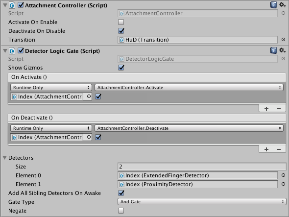

Using Hand Attachments¶
To use hand attachments, add a pair of the HandAttachments prefabs to the Hand Pool:
- Drag a pair of HandAttachments prefabs into the scene.
- Set one prefab to Left Handedness and the other to Right. (It helps to rename the game objects too.)
- On the scene’s LeapHandController, increase the Hand Pool’s Model Pool size by one. This will create an additional element in the pool.
- Set the name of the new element to “utility_hands” (or any suitable name).
- Drag the HandAttachments from the scene hierarchy to the left and right model properties in the Hand Pool element that you just created.
- Set Is Enabled and Can Duplicate to true.
- Add additional components and child game objects to the attachment points.
Note: you can remove the child transforms for any attachment points that you are not using from the HandAttachments script. This optimization will releave Unity from having to modify the unused transforms.
You can also make a prefab out of your completed HandAttachments game object. In that case, you can put the prefab into the Hand Pool directly and do not need a version in the scene hierarchy.
Using Attachments with Detectors¶
The HandAttachments prefab has a AttachmentController script that exposes two methods, Activate() and Deactivate() that you can hook directly to the event dispatchers of a detector. The AttachmentController script enables child game objects of the attachment controller when Activate() is called and disables them when Deactivate() is called. Thus, you can use detectors to turn objects attached to the hand on or off.
Adding a Transition¶
Transitions modify the position, rotation, scale, and color of child objects when the attachment turns on and off.
1. Drag a Transition prefab to an Attachment game object. 3. Select the parent Attachment game object in the hierarchy panel so that you can see the AttachmentController component in the Unity Inspector. Then drag your Transition game object to the Transition slot of the AttachmentController. 4. Add the desired child game objects and components as children of the Transition object. 5. Set the transition properties:
- Enable the “Animate...” checkboxes for the properties that you want to animate during the transition.
- Set the Simulate slider to 0.
- Adjust the “on” properties to the values you want when the attched objects are fully on.
- Set the Simulate slider to -1.
- Adjust the “off” properties to the values you want when the attched objects are fully off.
- Adjust the easing curves, if desired. The part of the curve from -1 to 0 is used when transitioning from off to on; the part of the curve from 0 to +1 is used when transitioning from on to off.
Note: you can move the Simulate slider back and forth to observe the transition in action.
Note: the “on” color of a child object is taken from its material. This color is blended with the Transition Color using the Unity Color.Lerp() function.
- Add code to call the AttachmentController Activate() and Deactivate() functions. These functions initiate the transitions. You can use detectors to call these functions. For example, for an Arm HUD, you could use a combination of ExtendedFingerDetector and the PalmDirectionDetector to turn on the attachment whenever the open hand faced the camera. A suitable transition would be to rotate the Arm HUD into position from behind the arm.